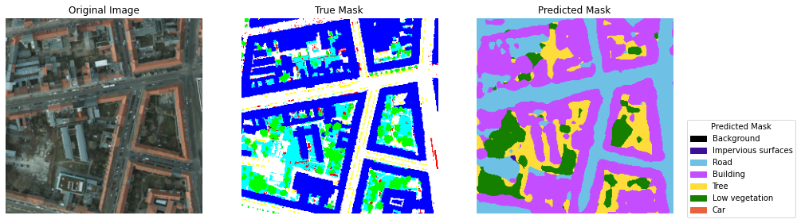

...: import numpy as np
...: import pandas as pd
...: import os
...: import matplotlib.pyplot as plt
...: from torch.nn import functional as F
...: from segmentation_models_pytorch import DeepLabV3Plus, losses
...: from bayes_opt import BayesianOptimization
...: import time
...: from sklearn.metrics import precision_score, recall_score, f1_score, jaccard_score
...:
...: print("All packages are successfully imported!")
...:
...: # Set the GPU to use
...: import tensorflow as tf
...: gpus = tf.config.experimental.list_physical_devices('GPU')
...: if gpus:
...: try:
...: for gpu in gpus:
...: tf.config.experimental.set_memory_growth(gpu, True)
...: tf.keras.mixed_precision.set_global_policy('mixed_float16')
...: print("GPU is being used")
...: except RuntimeError as e:
...: print(e)
...:
...: # Define directory paths
...: potsdam_img_dir = r'C:\Users\ce841228\Documents\Dissertation\DataSet\Potsdam\Images'
...: potsdam_mask_dir = r'C:\Users\ce841228\Documents\Dissertation\DataSet\Potsdam\Labels'
...: vaihingen_img_dir = r'C:\Users\ce841228\Documents\Dissertation\DataSet\Vaihingen\Images'
...: vaihingen_mask_dir = r'C:\Users\ce841228\Documents\Dissertation\DataSet\Vaihingen\Labels'
...:
...: # Define segmentation classes and colors
...: seg_classes = ["Background", "Impervious surfaces", "Road", "Building", "Tree", "Low vegetation", "Car"]
...: true_color_rgb = [(0, 0, 0), (255, 0, 0), (255, 255, 255), (0, 0, 255), (0, 255, 255), (0, 255, 0), (255, 255, 0)]
...:
...: pred_color_rgb = [(0, 0, 0), (60, 16, 152), (110, 193, 228), (196, 77, 255), (254, 221, 58), (21, 128, 0), (232, 98, 60)]
...:
...: ISPRS_colors = pd.DataFrame(data={"Classes": seg_classes, "Color_RGB": true_color_rgb})
...: print(ISPRS_colors)
...:
...: def rgb_to_class(mask, color_map):
...: mask_class = np.zeros(mask.shape[:2], dtype=np.uint8)
...: for i, color in enumerate(color_map):
...: mask_class[np.all(mask == color, axis=-1)] = i
...: return mask_class
...:
...: def class_to_rgb(mask_class, color_map):
...: mask_rgb = np.zeros((*mask_class.shape, 3), dtype=np.uint8)
...: for i, color in enumerate(color_map):
...: mask_rgb[mask_class == i] = color
...: return mask_rgb
...:
...: class PotsdamVaihingenDataset(Dataset):
...: def __init__(self, image_dir, mask_dir=None, transform=None, labeled=True, color_map=None, target_size=(256, 256)):
...: self.image_dir = image_dir
...: self.mask_dir = mask_dir
...: self.transform = transform
...: self.labeled = labeled
...: self.color_map = color_map
...: self.target_size = target_size
...: self.images = sorted(os.listdir(image_dir))
...: if self.labeled:
...: self.masks = sorted(os.listdir(mask_dir))
...: else:
...: self.masks = None
...:
...: def __len__(self):
...: return len(self.images)
...:
...: def __getitem__(self, idx):
...: img_path = os.path.join(self.image_dir, self.images[idx])
...: image = Image.open(img_path).convert("RGB")
...: if self.labeled:
...: mask_path = os.path.join(self.mask_dir, self.masks[idx])
...: mask = Image.open(mask_path)
...: mask = mask.resize(self.target_size, Image.NEAREST)
...: mask = np.array(mask)
...: mask = rgb_to_class(mask, self.color_map)
...: mask = torch.tensor(mask, dtype=torch.long)
...: if self.transform:
...: image = self.transform(image)
...: return image, mask
...: else:
...: if self.transform:
...: image = self.transform(image)
...: return image
...:
...: def get_transform():
...: return transforms.Compose([
...: transforms.Resize((256, 256)),
...: transforms.ToTensor(),
...: ])
...:
...: # Define the DeepLabV3+ model with ResNet-101 backbone
...: class DeepLabV3PlusModel(nn.Module):
...: def __init__(self, num_classes):
...: super(DeepLabV3PlusModel, self).__init__()
...: self.model = DeepLabV3Plus(
...: encoder_name="resnet101",
...: encoder_weights="imagenet",
...: in_channels=3,
...: classes=num_classes,
...: activation=None
...: )
...:
...: def forward(self, x):
...: return self.model(x)
...:
...: def calculate_metrics(pred, target, num_classes):
...: pred_flat = pred.flatten()
...: target_flat = target.flatten()
...:
...: precision = precision_score(target_flat, pred_flat, average='macro', zero_division=0) * 100
...: recall = recall_score(target_flat, pred_flat, average='macro', zero_division=0) * 100
...: f1 = f1_score(target_flat, pred_flat, average='macro', zero_division=0) * 100
...: iou = jaccard_score(target_flat, pred_flat, average='macro') * 100
...:
...: return precision, recall, f1, iou
...:
...: def train_one_epoch(model, dataloader, criterion, optimizer, device, num_classes):
...: model.train()
...: total_loss = 0
...: correct = 0
...: total = 0
...: total_precision, total_recall, total_f1, total_iou = 0, 0, 0, 0
...:
...: for img_labeled, mask_labeled in dataloader:
...: img_labeled, mask_labeled = img_labeled.to(device), mask_labeled.to(device)
...:
...: optimizer.zero_grad()
...:
...: # Forward pass
...: pred = model(img_labeled)
...: loss = criterion(pred, mask_labeled)
...:
...: # Backward pass and optimization
...: loss.backward()
...: optimizer.step()
...:
...: total_loss += loss.item()
...:
...: pred_classes = torch.argmax(pred, dim=1)
...: correct += (pred_classes == mask_labeled).sum().item()
...: total += mask_labeled.numel()
...:
...: precision, recall, f1, iou = calculate_metrics(pred_classes.cpu().numpy(), mask_labeled.cpu().numpy(), num_classes)
...: total_precision += precision
...: total_recall += recall
...: total_f1 += f1
...: total_iou += iou
...:
...: accuracy = correct / total * 100
...: avg_precision = total_precision / len(dataloader)
...: avg_recall = total_recall / len(dataloader)
...: avg_f1 = total_f1 / len(dataloader)
...: avg_iou = total_iou / len(dataloader)
...:
...: return total_loss / len(dataloader), accuracy, avg_precision, avg_recall, avg_f1, avg_iou
...:
...: def validate(model, dataloader, criterion, device, num_classes):
...: model.eval()
...: total_loss = 0
...: correct = 0
...: total = 0
...: total_precision, total_recall, total_f1, total_iou = 0, 0, 0, 0
...:
...: with torch.no_grad():
...: for img, mask in dataloader:
...: img, mask = img.to(device), mask.to(device)
...: output = model(img)
...: loss = criterion(output, mask)
...: total_loss += loss.item()
...:
...: pred_classes = torch.argmax(output, dim=1)
...: correct += (pred_classes == mask).sum().item()
...: total += mask.numel()
...:
...: precision, recall, f1, iou = calculate_metrics(pred_classes.cpu().numpy(), mask.cpu().numpy(), num_classes)
...: total_precision += precision
...: total_recall += recall
...: total_f1 += f1
...: total_iou += iou
...:
...: accuracy = correct / total * 100
...: avg_precision = total_precision / len(dataloader)
...: avg_recall = total_recall / len(dataloader)
...: avg_f1 = total_f1 / len(dataloader)
...: avg_iou = total_iou / len(dataloader)
...:
...: return total_loss / len(dataloader), accuracy, avg_precision, avg_recall, avg_f1, avg_iou
...:
...: def test(model, dataloader, criterion, device, num_classes):
...: model.eval()
...: total_loss = 0
...: correct = 0
...: total = 0
...: total_precision, total_recall, total_f1, total_iou = 0, 0, 0, 0
...:
...: with torch.no_grad():
...: for img, mask in dataloader:
...: img, mask = img.to(device), mask.to(device)
...: output = model(img)
...: loss = criterion(output, mask)
...: total_loss += loss.item()
...:
...: pred_classes = torch.argmax(output, dim=1)
...: correct += (pred_classes == mask).sum().item()
...: total += mask.numel()
...:
...: precision, recall, f1, iou = calculate_metrics(pred_classes.cpu().numpy(), mask.cpu().numpy(), num_classes)
...: total_precision += precision
...: total_recall += recall
...: total_f1 += f1
...: total_iou += iou
...:
...: accuracy = correct / total * 100
...: avg_precision = total_precision / len(dataloader)
...: avg_recall = total_recall / len(dataloader)
...: avg_f1 = total_f1 / len(dataloader)
...: avg_iou = total_iou / len(dataloader)
...:
...: return total_loss / len(dataloader), accuracy, avg_precision, avg_recall, avg_f1, avg_iou
...:
...: def visualize_predictions(model, dataloader, true_color_map, pred_color_map, device):
...: model.eval()
...: with torch.no_grad():
...: for img, mask in dataloader:
...: img = img.to(device)
...: pred = model(img)
...: pred_class = torch.argmax(pred, dim=1).cpu().numpy()
...: img = img.cpu().numpy().transpose(0, 2, 3, 1)
...: mask = mask.cpu().numpy()
...: pred_rgb = [class_to_rgb(pc, pred_color_map) for pc in pred_class]
...: true_rgb = [class_to_rgb(mc, true_color_map) for mc in mask]
...:
...: for i in range(len(img)):
...: plt.figure(figsize=(15, 5))
...: plt.subplot(1, 3, 1)
...: plt.imshow(img[i])
...: plt.title("Original Image")
...: plt.axis("off")
...: plt.subplot(1, 3, 2)
...: plt.imshow(true_rgb[i])
...: plt.title("True Mask")
...: plt.axis("off")
...: plt.subplot(1, 3, 3)
...: plt.imshow(pred_rgb[i])
...: plt.title("Predicted Mask")
...: plt.axis("off")
...:
...: handles_true = [plt.Rectangle((0, 0), 1, 1, color=np.array(c) / 255.0) for c in true_color_map]
...: handles_pred = [plt.Rectangle((0, 0), 1, 1, color=np.array(c) / 255.0) for c in pred_color_map]
...: labels = seg_classes
...: plt.legend(handles_true, labels, title="True Mask", bbox_to_anchor=(1.05, 1), loc='upper left')
...: plt.legend(handles_pred, labels, title="Predicted Mask", bbox_to_anchor=(1.05, 0.5), loc='upper left')
...:
...: plt.show()
...:
...: def plot_results(train_losses, train_accuracies, val_losses, val_accuracies):
...: epochs = list(range(1, len(train_losses) + 1))
...:
...: plt.figure(figsize=(12, 6))
...:
...: # Plot loss
...: plt.subplot(1, 2, 1)
...: plt.plot(epochs, train_losses, marker='o', label='Train Loss')
...: plt.plot(epochs, val_losses, marker='o', label='Validation Loss')
...: plt.title('Loss over Epochs')
...: plt.xlabel('Epoch')
...: plt.ylabel('Loss')
...: plt.legend()
...:
...: # Plot accuracy
...: plt.subplot(1, 2, 2)
...: plt.plot(epochs, train_accuracies, marker='o', label='Train Accuracy')
...: plt.plot(epochs, val_accuracies, marker='o', label='Validation Accuracy')
...: plt.title('Accuracy over Epochs')
...: plt.xlabel('Epoch')
...: plt.ylabel('Accuracy (%)')
...: plt.legend()
...:
...: plt.tight_layout()
...: plt.show()
...:
...: def main():
...: global device
...: device = torch.device('cuda' if torch.cuda.is_available() else 'cpu')
...:
...: # Combine Potsdam and Vaihingen datasets
...: potsdam_dataset = PotsdamVaihingenDataset(potsdam_img_dir, potsdam_mask_dir, transform=get_transform(), color_map=true_color_rgb)
...: vaihingen_dataset = PotsdamVaihingenDataset(vaihingen_img_dir, vaihingen_mask_dir, transform=get_transform(), color_map=true_color_rgb)
...: full_dataset = ConcatDataset([potsdam_dataset, vaihingen_dataset])
...:
...: # Split the combined dataset into train, validation, and test sets
...: train_size = int(0.7 * len(full_dataset))
...: val_size = int(0.15 * len(full_dataset))
...: test_size = len(full_dataset) - train_size - val_size
...: train_dataset, val_dataset, test_dataset = random_split(full_dataset, [train_size, val_size, test_size])
...:
...: # Dataloaders
...: batch_size = 32
...: train_loader = DataLoader(train_dataset, batch_size=batch_size, shuffle=True)
...: val_loader = DataLoader(val_dataset, batch_size=batch_size, shuffle=False)
...: test_loader = DataLoader(test_dataset, batch_size=batch_size, shuffle=False)
...:
...: # Model
...: num_classes = len(seg_classes)
...: model = DeepLabV3PlusModel(num_classes=num_classes).to(device)
...:
...: # Criterion (Use Dice Loss or IoU Loss)
...: criterion = losses.DiceLoss(mode='multiclass')
...:
...: # Optimizer with Learning Rate Scheduler
...: optimizer = optim.Adam(model.parameters(), lr=1e-4)
...: scheduler = optim.lr_scheduler.ReduceLROnPlateau(optimizer, 'min', patience=3, factor=0.1, verbose=True)
...:
...: # Hyperparameter Tuning using Bayesian Optimization
...: def objective_function(lr, weight_decay):
...: optimizer.param_groups[0]['lr'] = lr
...: optimizer.param_groups[0]['weight_decay'] = weight_decay
...:
...: # Perform one epoch of training and validation
...: train_loss, _, _, _, _, _ = train_one_epoch(model, train_loader, criterion, optimizer, device, num_classes)
...: val_loss, _, _, _, _, _ = validate(model, val_loader, criterion, device, num_classes)
...:
...: return -val_loss # Maximizing negative validation loss means minimizing validation loss
...:
...: pbounds = {'lr': (1e-5, 1e-3),'weight_decay': (1e-5, 1e-3)}
...:
...: optimizer_bayes = BayesianOptimization(f=objective_function, pbounds=pbounds, random_state=42, verbose=2)
...:
...: optimizer_bayes.maximize(init_points=5, n_iter=20)
...:
...: # Apply the best hyperparameters
...: best_hps = optimizer_bayes.max['params']
...: optimizer.param_groups[0]['lr'] = best_hps['lr']
...: optimizer.param_groups[0]['weight_decay'] = best_hps['weight_decay']
...: print(f"Best Hyperparameters: {best_hps}")
...:
...: # Training loop
...: num_epochs = 50
...: train_losses, train_accuracies, train_precisions, train_recalls, train_f1s, train_ious = [], [], [], [], [], []
...: val_losses, val_accuracies, val_precisions, val_recalls, val_f1s, val_ious = [], [], [], [], [], []
...:
...: for epoch in range(num_epochs):
...: start_time = time.time()
...: train_loss, train_acc, train_prec, train_recall, train_f1, train_iou = train_one_epoch(model, train_loader, criterion, optimizer, device, num_classes)
...: val_loss, val_acc, val_prec, val_recall, val_f1, val_iou = validate(model, val_loader, criterion, device, num_classes)
...: scheduler.step(val_loss)
...: epoch_time = time.time() - start_time
...:
...: train_losses.append(train_loss)
...: train_accuracies.append(train_acc)
...: train_precisions.append(train_prec)
...: train_recalls.append(train_recall)
...: train_f1s.append(train_f1)
...: train_ious.append(train_iou)
...:
...: val_losses.append(val_loss)
...: val_accuracies.append(val_acc)
...: val_precisions.append(val_prec)
...: val_recalls.append(val_recall)
...: val_f1s.append(val_f1)
...: val_ious.append(val_iou)
...:
...: print(f'Epoch {epoch + 1}/{num_epochs}, Time: {epoch_time:.2f}s, '
...: f'Train Loss: {train_loss:.4f}, Train Accuracy: {train_acc:.2f}%, '
...: f'Val Loss: {val_loss:.4f}, Val Accuracy: {val_acc:.2f}%, '
...: f'Precision: {val_prec:.2f}%, Recall: {val_recall:.2f}%, F1-Score: {val_f1:.2f}%, IoU: {val_iou:.2f}%')
...:
...: # Test the model
...: test_loss, test_acc, test_prec, test_recall, test_f1, test_iou = test(model, test_loader, criterion, device, num_classes)
...: print(f'Test Loss: {test_loss:.4f}, Test Accuracy: {test_acc:.2f}%, '
...: f'Precision: {test_prec:.2f}%, Recall: {test_recall:.2f}%, F1-Score: {test_f1:.2f}%, IoU: {test_iou:.2f}%')
...:
...: # Visualize predictions on validation set
...: visualize_predictions(model, val_loader, true_color_rgb, pred_color_rgb, device)
...:
...: # Plot the results
...: plot_results(train_losses, train_accuracies, val_losses, val_accuracies)
...:
...: if __name__ == '__main__':
...: main()
All packages are successfully imported!
INFO:tensorflow:Mixed precision compatibility check (mixed_float16): OK
Your GPU will likely run quickly with dtype policy mixed_float16 as it has compute capability of at least 7.0. Your GPU: NVIDIA RTX 4000 Ada Generation, compute capability 8.9
GPU is being used
Classes Color_RGB
0 Background (0, 0, 0)
1 Impervious surfaces (255, 0, 0)
2 Road (255, 255, 255)
3 Building (0, 0, 255)
4 Tree (0, 255, 255)
5 Low vegetation (0, 255, 0)
6 Car (255, 255, 0)
C:\ProgramData\anaconda3\envs\c39tf\lib\site-packages\torch\optim\lr_scheduler.py:60: UserWarning: The verbose parameter is deprecated. Please use get_last_lr() to access the learning rate.
warnings.warn(
| iter | target | lr | weight... |
-------------------------------------------------
| 1 | -0.7436 | 0.0003808 | 0.0009512 |
| 2 | -0.7428 | 0.0007347 | 0.0006027 |
| 3 | -0.7423 | 0.0001645 | 0.0001644 |
| 4 | -0.7418 | 6.75e-05 | 0.0008675 |
| 5 | -0.7408 | 0.0006051 | 0.000711 |
| 6 | -0.739 | 0.0006153 | 0.0007121 |
| 7 | -0.7387 | 0.0006212 | 0.000719 |
| 8 | -0.7391 | 0.0006323 | 0.0007051 |
| 9 | -0.7382 | 0.0006479 | 0.0007305 |
| 10 | -0.7381 | 0.0006406 | 0.0007531 |
| 11 | -0.7375 | 0.0006677 | 0.0007524 |
| 12 | -0.7435 | 0.0006621 | 0.0007813 |
| 13 | -0.7451 | 0.000676 | 0.0007332 |
| 14 | -0.7452 | 0.0006544 | 0.0007489 |
| 15 | -0.741 | 0.0006381 | 0.0007228 |
| 16 | -0.7379 | 0.0006301 | 0.0007517 |
| 17 | -0.7419 | 0.000634 | 0.0007625 |
| 18 | -0.748 | 0.0006353 | 0.0007422 |
| 19 | -0.7285 | 0.0006533 | 0.0007215 |
| 20 | -0.6949 | 0.0006555 | 0.0007156 |
| 21 | -0.6461 | 0.0006575 | 0.0007104 |
| 22 | -0.6262 | 0.0006597 | 0.0007052 |
| 23 | -0.6129 | 0.0006671 | 0.0007067 |
| 24 | -0.613 | 0.000675 | 0.0006987 |
| 25 | -0.6207 | 0.0006857 | 0.0007049 |
=================================================
Best Hyperparameters: {'lr': 0.00066708912203995, 'weight_decay': 0.0007066772614613496}
Epoch 1/50, Time: 53.59s, Train Loss: 0.4635, Train Accuracy: 63.18%, Val Loss: 0.6188, Val Accuracy: 42.51%, Precision: 29.20%, Recall: 26.87%, F1-Score: 25.16%, IoU: 16.19%
Epoch 2/50, Time: 54.13s, Train Loss: 0.5056, Train Accuracy: 64.85%, Val Loss: 0.5889, Val Accuracy: 48.33%, Precision: 50.74%, Recall: 34.26%, F1-Score: 33.42%, IoU: 22.16%
Epoch 3/50, Time: 53.63s, Train Loss: 0.5025, Train Accuracy: 65.52%, Val Loss: 0.5813, Val Accuracy: 48.90%, Precision: 39.08%, Recall: 34.43%, F1-Score: 33.81%, IoU: 22.32%
Epoch 4/50, Time: 53.77s, Train Loss: 0.5170, Train Accuracy: 64.48%, Val Loss: 0.5791, Val Accuracy: 48.19%, Precision: 50.86%, Recall: 34.57%, F1-Score: 34.17%, IoU: 22.51%
Epoch 5/50, Time: 53.52s, Train Loss: 0.4905, Train Accuracy: 65.88%, Val Loss: 0.5554, Val Accuracy: 54.08%, Precision: 42.10%, Recall: 37.95%, F1-Score: 37.85%, IoU: 26.06%
Epoch 6/50, Time: 53.69s, Train Loss: 0.4469, Train Accuracy: 64.56%, Val Loss: 0.5509, Val Accuracy: 55.57%, Precision: 39.48%, Recall: 32.65%, F1-Score: 32.06%, IoU: 22.51%
Epoch 7/50, Time: 53.44s, Train Loss: 0.4431, Train Accuracy: 65.68%, Val Loss: 0.5268, Val Accuracy: 56.61%, Precision: 36.86%, Recall: 34.62%, F1-Score: 35.05%, IoU: 24.43%
Epoch 8/50, Time: 53.38s, Train Loss: 0.4195, Train Accuracy: 67.25%, Val Loss: 0.6287, Val Accuracy: 35.84%, Precision: 31.10%, Recall: 22.01%, F1-Score: 23.74%, IoU: 15.44%
Epoch 9/50, Time: 53.35s, Train Loss: 0.4386, Train Accuracy: 66.70%, Val Loss: 0.5564, Val Accuracy: 51.11%, Precision: 38.44%, Recall: 38.44%, F1-Score: 36.69%, IoU: 24.92%
Epoch 10/50, Time: 54.04s, Train Loss: 0.5375, Train Accuracy: 65.13%, Val Loss: 0.8557, Val Accuracy: 0.01%, Precision: 13.00%, Recall: 0.06%, F1-Score: 0.12%, IoU: 0.06%
Epoch 11/50, Time: 53.59s, Train Loss: 0.5025, Train Accuracy: 65.49%, Val Loss: 0.8571, Val Accuracy: 0.00%, Precision: 0.00%, Recall: 0.00%, F1-Score: 0.00%, IoU: 0.00%
Epoch 12/50, Time: 52.44s, Train Loss: 0.4896, Train Accuracy: 65.88%, Val Loss: 0.8567, Val Accuracy: 0.00%, Precision: 15.78%, Recall: 0.00%, F1-Score: 0.01%, IoU: 0.00%
Epoch 13/50, Time: 51.72s, Train Loss: 0.4254, Train Accuracy: 65.71%, Val Loss: 0.7419, Val Accuracy: 12.17%, Precision: 37.01%, Recall: 7.28%, F1-Score: 11.92%, IoU: 6.66%
Epoch 14/50, Time: 51.89s, Train Loss: 0.4256, Train Accuracy: 67.02%, Val Loss: 0.6684, Val Accuracy: 20.93%, Precision: 43.51%, Recall: 13.12%, F1-Score: 19.41%, IoU: 11.61%
Epoch 15/50, Time: 51.97s, Train Loss: 0.4997, Train Accuracy: 66.53%, Val Loss: 0.6134, Val Accuracy: 29.18%, Precision: 51.22%, Recall: 18.20%, F1-Score: 24.98%, IoU: 15.68%
Epoch 16/50, Time: 52.26s, Train Loss: 0.4101, Train Accuracy: 67.62%, Val Loss: 0.5587, Val Accuracy: 43.19%, Precision: 45.25%, Recall: 26.07%, F1-Score: 30.73%, IoU: 20.61%
Epoch 17/50, Time: 52.03s, Train Loss: 0.4150, Train Accuracy: 67.52%, Val Loss: 0.5400, Val Accuracy: 47.96%, Precision: 45.31%, Recall: 29.03%, F1-Score: 32.66%, IoU: 22.31%
Epoch 18/50, Time: 51.90s, Train Loss: 0.4134, Train Accuracy: 67.10%, Val Loss: 0.5282, Val Accuracy: 50.14%, Precision: 46.51%, Recall: 30.46%, F1-Score: 33.75%, IoU: 23.25%
Epoch 19/50, Time: 51.90s, Train Loss: 0.4744, Train Accuracy: 67.21%, Val Loss: 0.5159, Val Accuracy: 53.35%, Precision: 46.32%, Recall: 32.41%, F1-Score: 35.07%, IoU: 24.50%
Epoch 20/50, Time: 51.98s, Train Loss: 0.4743, Train Accuracy: 66.91%, Val Loss: 0.5059, Val Accuracy: 56.59%, Precision: 47.12%, Recall: 34.27%, F1-Score: 36.19%, IoU: 25.59%
Epoch 21/50, Time: 51.89s, Train Loss: 0.4812, Train Accuracy: 67.46%, Val Loss: 0.4992, Val Accuracy: 59.19%, Precision: 46.26%, Recall: 35.69%, F1-Score: 36.89%, IoU: 26.34%
Epoch 22/50, Time: 51.98s, Train Loss: 0.4193, Train Accuracy: 67.66%, Val Loss: 0.4961, Val Accuracy: 60.24%, Precision: 45.14%, Recall: 36.30%, F1-Score: 37.18%, IoU: 26.63%
Epoch 23/50, Time: 51.95s, Train Loss: 0.4792, Train Accuracy: 68.23%, Val Loss: 0.4938, Val Accuracy: 60.92%, Precision: 44.41%, Recall: 36.67%, F1-Score: 37.34%, IoU: 26.79%
Epoch 24/50, Time: 52.32s, Train Loss: 0.4747, Train Accuracy: 68.31%, Val Loss: 0.4921, Val Accuracy: 61.29%, Precision: 43.98%, Recall: 36.89%, F1-Score: 37.47%, IoU: 26.91%
Epoch 25/50, Time: 52.34s, Train Loss: 0.4064, Train Accuracy: 67.35%, Val Loss: 0.4909, Val Accuracy: 61.65%, Precision: 44.37%, Recall: 37.05%, F1-Score: 37.54%, IoU: 27.00%
Epoch 26/50, Time: 52.19s, Train Loss: 0.4743, Train Accuracy: 67.74%, Val Loss: 0.4898, Val Accuracy: 61.76%, Precision: 44.61%, Recall: 37.14%, F1-Score: 37.61%, IoU: 27.05%
Epoch 27/50, Time: 52.24s, Train Loss: 0.3988, Train Accuracy: 68.54%, Val Loss: 0.4901, Val Accuracy: 61.82%, Precision: 44.86%, Recall: 37.13%, F1-Score: 37.59%, IoU: 27.05%
Epoch 28/50, Time: 52.75s, Train Loss: 0.4791, Train Accuracy: 68.39%, Val Loss: 0.4900, Val Accuracy: 61.87%, Precision: 44.78%, Recall: 37.16%, F1-Score: 37.59%, IoU: 27.07%
Epoch 29/50, Time: 54.20s, Train Loss: 0.4687, Train Accuracy: 67.65%, Val Loss: 0.4901, Val Accuracy: 61.94%, Precision: 45.38%, Recall: 37.18%, F1-Score: 37.59%, IoU: 27.09%
Epoch 30/50, Time: 54.16s, Train Loss: 0.3966, Train Accuracy: 68.15%, Val Loss: 0.4900, Val Accuracy: 61.96%, Precision: 45.71%, Recall: 37.17%, F1-Score: 37.60%, IoU: 27.09%
Epoch 31/50, Time: 54.11s, Train Loss: 0.4744, Train Accuracy: 67.70%, Val Loss: 0.4902, Val Accuracy: 61.98%, Precision: 45.97%, Recall: 37.18%, F1-Score: 37.60%, IoU: 27.10%
Epoch 32/50, Time: 54.06s, Train Loss: 0.4066, Train Accuracy: 68.23%, Val Loss: 0.4896, Val Accuracy: 61.96%, Precision: 45.36%, Recall: 37.19%, F1-Score: 37.61%, IoU: 27.10%
Epoch 33/50, Time: 54.46s, Train Loss: 0.4708, Train Accuracy: 68.54%, Val Loss: 0.4898, Val Accuracy: 61.96%, Precision: 45.46%, Recall: 37.16%, F1-Score: 37.60%, IoU: 27.09%
Epoch 34/50, Time: 54.39s, Train Loss: 0.4015, Train Accuracy: 68.73%, Val Loss: 0.4893, Val Accuracy: 61.97%, Precision: 45.33%, Recall: 37.19%, F1-Score: 37.63%, IoU: 27.11%
Epoch 35/50, Time: 53.94s, Train Loss: 0.4784, Train Accuracy: 68.53%, Val Loss: 0.4892, Val Accuracy: 61.98%, Precision: 45.32%, Recall: 37.22%, F1-Score: 37.64%, IoU: 27.13%
Epoch 36/50, Time: 53.11s, Train Loss: 0.4860, Train Accuracy: 67.02%, Val Loss: 0.4885, Val Accuracy: 62.00%, Precision: 45.42%, Recall: 37.28%, F1-Score: 37.68%, IoU: 27.16%
Epoch 37/50, Time: 53.13s, Train Loss: 0.4134, Train Accuracy: 68.28%, Val Loss: 0.4880, Val Accuracy: 61.99%, Precision: 45.40%, Recall: 37.30%, F1-Score: 37.71%, IoU: 27.18%
Epoch 38/50, Time: 53.11s, Train Loss: 0.3963, Train Accuracy: 68.58%, Val Loss: 0.4887, Val Accuracy: 61.99%, Precision: 45.25%, Recall: 37.27%, F1-Score: 37.67%, IoU: 27.15%
Epoch 39/50, Time: 52.83s, Train Loss: 0.4811, Train Accuracy: 67.77%, Val Loss: 0.4879, Val Accuracy: 61.99%, Precision: 45.24%, Recall: 37.29%, F1-Score: 37.71%, IoU: 27.18%
Epoch 40/50, Time: 52.99s, Train Loss: 0.4073, Train Accuracy: 68.47%, Val Loss: 0.4879, Val Accuracy: 61.97%, Precision: 45.14%, Recall: 37.29%, F1-Score: 37.71%, IoU: 27.17%
Epoch 41/50, Time: 52.60s, Train Loss: 0.3962, Train Accuracy: 68.89%, Val Loss: 0.4885, Val Accuracy: 61.99%, Precision: 45.35%, Recall: 37.26%, F1-Score: 37.68%, IoU: 27.16%
Epoch 42/50, Time: 52.26s, Train Loss: 0.4690, Train Accuracy: 68.06%, Val Loss: 0.4884, Val Accuracy: 62.06%, Precision: 45.70%, Recall: 37.29%, F1-Score: 37.70%, IoU: 27.18%
Epoch 43/50, Time: 52.42s, Train Loss: 0.4067, Train Accuracy: 68.60%, Val Loss: 0.4884, Val Accuracy: 62.03%, Precision: 45.38%, Recall: 37.28%, F1-Score: 37.69%, IoU: 27.18%
Epoch 44/50, Time: 52.85s, Train Loss: 0.4780, Train Accuracy: 67.95%, Val Loss: 0.4882, Val Accuracy: 62.02%, Precision: 45.27%, Recall: 37.28%, F1-Score: 37.69%, IoU: 27.18%
Epoch 45/50, Time: 52.20s, Train Loss: 0.4759, Train Accuracy: 68.39%, Val Loss: 0.4879, Val Accuracy: 62.05%, Precision: 45.48%, Recall: 37.30%, F1-Score: 37.72%, IoU: 27.19%
Epoch 46/50, Time: 52.59s, Train Loss: 0.4061, Train Accuracy: 67.93%, Val Loss: 0.4877, Val Accuracy: 62.05%, Precision: 45.39%, Recall: 37.32%, F1-Score: 37.73%, IoU: 27.20%
Epoch 47/50, Time: 52.09s, Train Loss: 0.4666, Train Accuracy: 68.71%, Val Loss: 0.4877, Val Accuracy: 62.03%, Precision: 45.49%, Recall: 37.31%, F1-Score: 37.74%, IoU: 27.20%
Epoch 48/50, Time: 52.25s, Train Loss: 0.4737, Train Accuracy: 68.01%, Val Loss: 0.4881, Val Accuracy: 62.04%, Precision: 45.65%, Recall: 37.28%, F1-Score: 37.70%, IoU: 27.18%
Epoch 49/50, Time: 51.78s, Train Loss: 0.4008, Train Accuracy: 68.79%, Val Loss: 0.4882, Val Accuracy: 62.04%, Precision: 45.52%, Recall: 37.28%, F1-Score: 37.69%, IoU: 27.18%
Epoch 50/50, Time: 52.57s, Train Loss: 0.4806, Train Accuracy: 68.65%, Val Loss: 0.4878, Val Accuracy: 62.02%, Precision: 45.38%, Recall: 37.30%, F1-Score: 37.72%, IoU: 27.18%
Test Loss: 0.4287, Test Accuracy: 68.21%, Precision: 50.66%, Recall: 43.21%, F1-Score: 43.76%, IoU: 32.67%

In [2]: